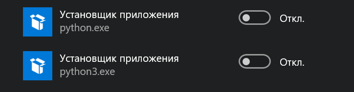

Для установки всех необходимых инструментов и Python используется пакетный менеджер Chocolatey, при помощи которого устанавливаются:
Ставим пакетный менеджер choсo по инструкции с официального сайта, для установки в PowerShell под администратором необходимо выполнить следующую команду:
Set-ExecutionPolicy Bypass -Scope Process -Force; [System.Net.ServicePointManager]::SecurityProtocol = [System.Net.ServicePointManager]::SecurityProtocol -bor 3072; iex ((New-Object System.Net.WebClient).DownloadString('https://community.chocolatey.org/install.ps1'))
Ставим pyenv по официальной инструкции и проверяем версию после установки
choco install pyenv-win
pyenv --version
Если возникли проблемы - переводим политики запуска скриптов в PowerShell в байпас для обхода ограничений безопасности
Set-ExecutionPolicy -ExecutionPolicy Bypass
И проверяем все ли переменные среды в PATH на месте

После успешной установки необходимо выполнить rehash
pyenv rehash
Выводим список доступных версий и ставим необходимую
pyenv install -l
pyenv install 3.9.6
Командой global выбрать версию питона по умолчанию
pyenv global 3.9.6
Заходим через поиск в пуске в управление псевдонимами(alias) и выключаем 2 установщика python
Обновление выполняется при помощи choco
choco upgrade Pyenv-win
Как и с Pyenv инструкция есть на [официальном сайте](https://python-poetry.org/docs/), необходимо под администратором в PowerShell запустить следующую команду
(Invoke-WebRequest -Uri https://raw.githubusercontent.com/python-poetry/poetry/master/get-poetry.py -UseBasicParsing).Content | python -
Проверяем версию
poetry --version
Если не работает - добавляем вручную в PATH
%USERPROFILE%\.poetry\bin
Обновление выполняется вызовом встроенной команды
poetry self update
Порядок использования
poetry init
poetry install
poetry run python .\main.py
Добавление библиотеки mypy в основные и в dev-dependencies:
poetry add mypy
poetry add mypy -D
Удаление зависимости в в dev-dependencies и в основных происходит по тому же принципу
poetry remove mypy -D
poetry remove mypy